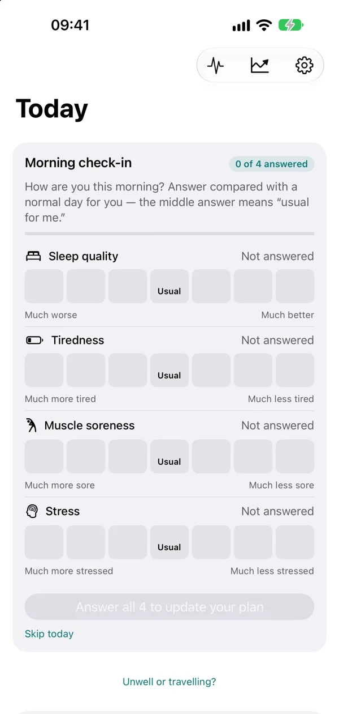
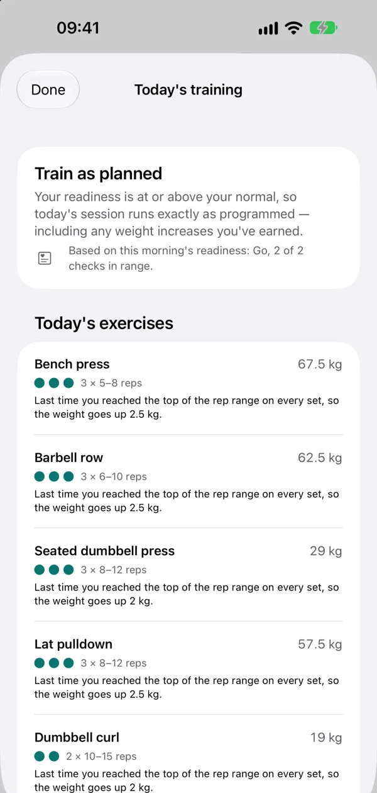
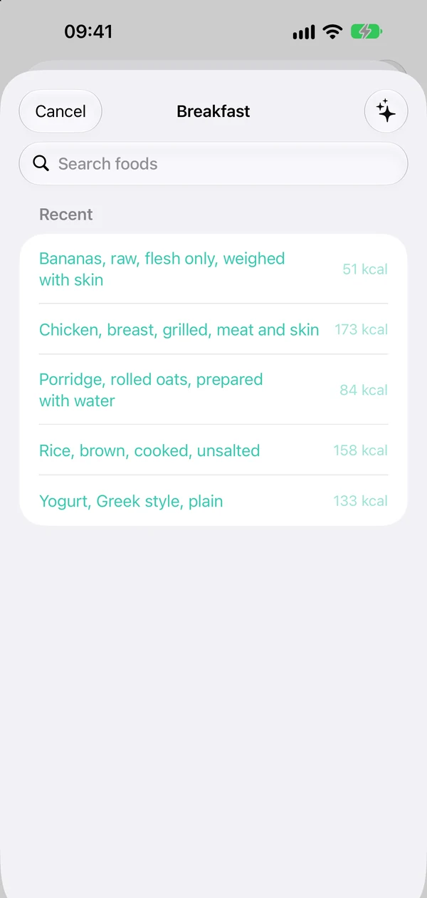
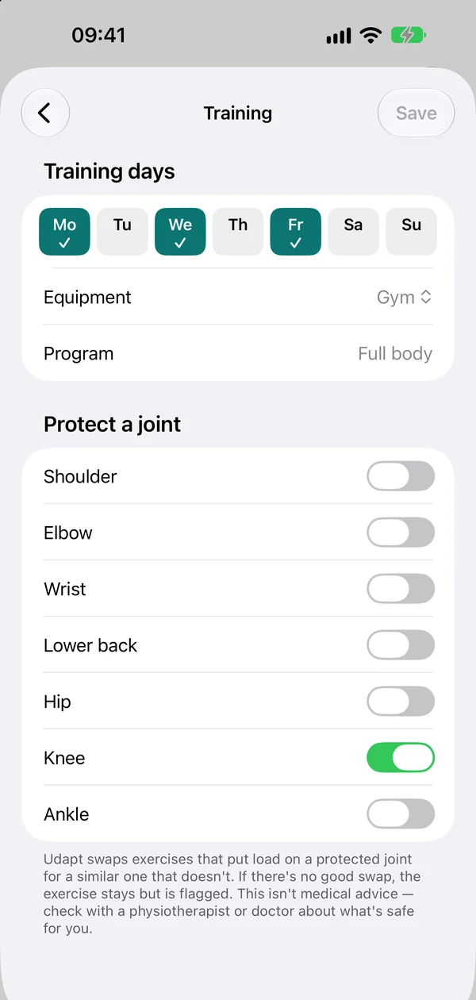
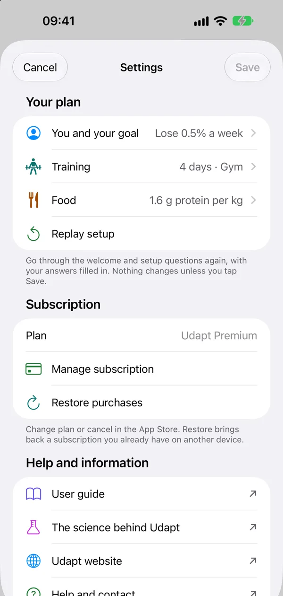

User guide
How to use Udapt
A friendly walk through everything Udapt does. Take it at your own pace — you don’t need to use every feature for your plan to work. Nothing here is medical advice.
Getting started
There’s no account to create. Open Udapt and it asks a few questions, which takes a few minutes. Your answers stay on your phone.
- Connect Apple Health. Udapt reads your sleep, heart rate variability, resting heart rate, weight and workouts. You can skip this and use the morning check-in instead.
- About you and the health check. Your date of birth, sex, height and weight, then five yes-or-no health questions (see The health check).
- Your typical day and your goal. How active you are outside your workouts, and whether to lose, maintain or gain weight, and how fast.
- Your training. Your strength days, where you usually train (gym, home or resistance bands), what you have at home, and your level.
- Running, cycling or swimming, if you’d like them: the activity, your level and your days.
Udapt then shows your starting plan. Please check with your doctor or a health professional before you start. You can go through setup again any time from Settings → Replay setup.
The Today screen
Today is the screen you need each morning. Its cards show:
- Readiness: Go, Ease off or Recover, and how many of your checks are in your usual range.
- Training: today’s workout, already adjusted for how you’re doing, and where you’re training.
- Today’s run, ride or swim, on your cardio days.
- Today’s food: your calorie target, protein, carbs and fat, and how much you’ve logged.
Every card has a Why? button that explains what changed and why, in plain words, with the research behind it. The buttons at the top open your readiness, Progress and Settings. Touch and hold a card and drag it to change the order.
Widgets: add Udapt to your Home Screen or Lock Screen to see today’s readiness and session at a glance, including today’s run, ride or swim. During run/walk they show which week you’re on.

Your readiness
Each morning Udapt gives you one of three states:
- Go: train as planned.
- Ease off: a lighter version of today’s session.
- Recover: a walk, stretching or rest is suggested. Your planned session is still one tap away.
It comes from two checks: your heart signals (heart rate variability and resting heart rate from your Apple Watch, compared with your own last 10 readings) and your morning check-in. Each check that’s outside your usual range moves the day down one step. The card says how many checks were in range, for example “2 of 2 checks in range”. There’s no score out of 10, because no study gives one.
Last night’s sleep is shown next to it with the expert guidance of at least 7 hours (8 for teenagers), but it doesn’t change your readiness. Tap Why? for the details, or see The science.
“Learning your normal”? Udapt needs about 9 nights of heart readings first. In the meantime, the morning check-in still gives you a readiness.
Don’t wear your Watch in bed? Turn on Morning reading in Settings → You and your goal. When you wake, sit still for about a minute, then do a 1-minute Breathe session in the Mindfulness app on your Watch, sitting and breathing at your normal pace (you don’t need to follow the animation), before coffee, food or exercise. Say so in the morning check-in, and the reading stands in for the overnight one. Morning readings are compared only with your other morning readings, so Udapt needs about 9 of them first. A night with your Watch on always counts first. A Breathe reading is less precise than a chest strap; the science page explains the limits.

The morning check-in
Four quick questions: your sleep quality, tiredness, muscle soreness and stress, each compared with a normal day for you, from “Much better” to “Much worse”. The middle answer means “usual for me”.
Tiredness and soreness decide whether the check-in is in your usual range; sleep and stress are kept and shown back to you. Tap Skip today if you’re not in the mood, or Redo to change your answers. You can also do it on your Apple Watch. With the morning reading on, the check-in also asks whether you did your morning Breathe reading.

Doing a workout
- On Today, tap Start workout.
- For each set, adjust the weight and reps if you need to, then tap the circle to mark it done. Each set says how many reps to leave in the tank.
- After a main set, Udapt asks Reps left? — how many more you could have done. This is how it decides when to raise the weight. An honest guess is fine.
- Tap Finish, then say how hard the session was from 0 to 10 if you like. Your workout is saved to Apple Health, and next time’s weights are worked out for you.
Next to each exercise are How to (photos, steps and a Watch on YouTube button that searches YouTube for that exercise — those videos aren’t made or checked by Udapt), Progress (a chart of your strength over time) and Swap (a different exercise for the same muscles, just for today or always).
If Udapt has eased off today’s session but you feel great, tap Keep the original session.

Where you train and your level
On Today’s training card, Training at lets you choose where each session happens: Gym, Home, Resistance bands, Hotel gym or Just the floor. The session changes to suit what’s there.
- Home: tell Udapt what you have in Settings → Training, from a pair of dumbbells to a multi-gym. A medicine ball adds a short power finisher.
- Hotel gym: tap What’s in the hotel gym? and Udapt remembers it for next time.
- Level: Beginner, Intermediate or Experienced. Beginners do two sets and simpler versions of the big lifts. When you’ve trained regularly for about six months, Udapt offers the next level; you choose whether to move up.

Running, cycling and swimming
Set it up in Settings → Training → Running and cycling: choose running, cycling, swimming or fitness training, your level and your days. Udapt suggests days that aren’t strength days.
- Running: a nine-week run/walk plan to a 30-minute run, or easy runs towards a goal you set. Add a race (5K to marathon) for a countdown and two lighter weeks before it. For 5K to half marathon, add a race you ran in the past year and when you ran it, and Udapt estimates your finish and gives you a race pace for race day. Your training runs stay easy, by the talk test. If you set your race goal before Udapt 1.5, edit it and add when you ran your recent race.
- Cycling: easy rides of the length you choose.
- Swimming: pool or open-water sessions, recorded on Apple Watch, or logged on iPhone with Log a swim.
- Fitness training: runs plus a weekly station session in a race format, for people already at Intermediate level.
Before each session, Udapt shows Stop if…, and for swims, water safety advice. Runs and rides have a timer, spoken cues, distance and pace, on iPhone or Apple Watch, and are saved to Apple Health. Afterwards Udapt asks how hard it was, whether you could talk in full sentences, and whether to repeat the week. Runs, rides and swims from other apps and devices that save to Apple Health count too.
Repeat a week: on the run/walk card, tap Repeat a week to start this week or an earlier one again from its first run, whenever you like. After a break, run/walk carries on where you left off; it never moves you back on its own.
Apple Watch
The Udapt app on your Apple Watch shows today’s readiness and plan. You can:
- Do the morning check-in, and say whether you did your morning Breathe reading if it’s on.
- Log a workout with the Digital Crown, with your heart rate, last time’s weights, how-tos, swaps and a rest timer.
- Run, ride or swim with every interval, your pace, and lengths in the pool.
- Add complications for readiness, today’s session and protein, and find Udapt in the Smart Stack.
Your iPhone sends today’s plan to your Watch, and finished sessions go back to your iPhone and Apple Health.
Progress
Tap the chart button at the top of Today. Progress shows how many weeks in a row you’ve done your training days, this week’s sets for each muscle (each one aims for at least two sessions a week), and your personal records. After a workout you can share a picture of it.

Logging food
Tap Log food on Today, then Add food under a meal. You can:
- Search thousands of foods by name.
- Scan a barcode on packaged food. Only the barcode number is sent to Open Food Facts, a nonprofit food database.
- Smart log: take a photo of your meal or say what you ate. This uses Apple Intelligence on your phone, so it only appears on iPhones that support it. Udapt shows what it recognised for you to check before anything is logged.
- Quick add calories when you know the number but not the food, like a takeaway.
- Copy yesterday’s food if you eat the same things.
At the end of the day, switch on Today’s log is complete. Only complete days are used to fine-tune your calorie target, so a half-logged day doesn’t throw it off.

Understanding your food targets
- Your calorie target is the same every day: no study we found sets how much more to eat on a weight-training day, so Udapt doesn’t guess.
- Protein never drops. It starts at 1.6 g for each kg you weigh, and you can set 1.2 to 2.0 g in Settings.
- Once you’ve weighed in and logged your food completely every day for 31 days, Udapt compares what you ate with how your weight moved and corrects your target.
Tap Why? on the Today’s food card to see how today’s number was built and how close Udapt is to learning your real daily burn (see The science). Weigh yourself with smart scales that save to Apple Health, or add your weight in the Health app.

Unwell, travelling and lighter weeks
- Unwell: tap Unwell or travelling? on Today and say whether it’s a cold or something more. Udapt makes it a rest day and keeps your food target steady. Tap I’m better and your first week back is lighter.
- Travelling: sessions use exercises that need nothing but the floor, at a lighter week’s volume. Udapt asks when your iPhone changes time zone. Tap I’m home when you’re back.
- A lighter week: on a Recover day, Udapt offers seven days of fewer sets. It’s your choice.
GLP-1 mode
If you take a GLP-1 medicine, turn on I take a GLP-1 medicine in Settings → You and your goal. Your morning check-in gains two optional taps, Queasy today and Not hungry today. Either one makes a good day’s session lighter, and the food card puts protein first, with small meals and plenty to drink. Udapt never asks about your medicine or dose, and never advises on them.
Menopause mode
Turn on I’m in perimenopause or menopause in Settings → You and your goal. Each week then includes a back extension, the morning check-in adds two optional taps (Hot flushes or night sweats and Achy joints, shown back to you as your own pattern in Your last two weeks on your readiness screen), and you can turn on a daily Bone builder that follows the Royal Osteoporosis Society’s impact exercise levels. You start at Level 1 and move up when you feel confident. Turning it on turns off cycle tracking.
Protecting a joint
If you’re being careful with a shoulder, elbow, wrist, lower back, hip, knee or ankle, go to Settings → Training → Protect a joint and switch it on.
Udapt then swaps exercises that load that joint for a similar one that doesn’t. If there’s no good swap, the exercise stays but is flagged so you can go carefully or pick your own.
This isn’t medical advice. Please check with a doctor or health professional about what’s safe for you.

The health check
When you set up Udapt, it asks five yes-or-no questions: about your heart, chest pain, fainting or dizziness, medicine for your heart rate or blood pressure, and any limits your doctor has set. They’re based on PAR-Q+, a widely used questionnaire for people starting to exercise.
If you answer yes to any of them, Udapt steps back from your training and doesn’t plan runs or rides for you, because the people who know your health are best placed to set your exercise. You still get your food targets, and your readiness for information. If your doctor or rehab team clears you, you can tell Udapt in Settings → You and your goal → Health check.
If you take medicine that affects your heart rate or blood pressure, your readiness leaves out your heart signals and uses your morning check-in, and the morning reading isn’t offered.
If you answered no to every question, you can hide Stop if… before each session in Settings → Training. It still shows when you pause.
My own plan
If your health or rehab team has given you an exercise plan, you can log it in Udapt. Go to Settings → Training → My own plan and add each exercise as it’s written: how many sets, the reps or time, any weight, how hard it should feel in their words, and which days. Walks, runs and rides can go in too, and you can import a file your team sent.
Udapt records your plan exactly as you enter it. It won’t change it, suggest other exercises or weights, or compare it with your Health data. Only the people who gave you the plan should change it.
On a plan day, Today shows what’s on your plan. Tap Log today’s session and tick each set as you do it. Every session starts with the same safety advice, and you can add a note for your rehab team. Finished sessions are saved to Apple Health.
To show your rehab team what you’ve done, go to My own plan → Share my sessions. It shares a plain list of the dates, what you did and your notes.
If Udapt has stepped back from your training after the health check, My own plan is where your own programme goes. Always follow the safety advice your rehab team gave you.
If you’re under 18
Udapt is for people aged 13 and over, and changes a few things until your 18th birthday:
- Learn each lift with a coach, PE teacher or an experienced adult before adding weight. Sets stay between 6 and 15 reps, and you always stop with a couple of reps left. Up to 3 strength days a week, with a rest day between.
- Under 14, you train with resistance bands and your bodyweight.
- Your food target is what you need for your age and growth. There’s no weight-loss or weight-gain goal: while you’re growing, the aim is to eat enough to grow and train.
- Your readiness shows sleep with the 8–10 hour guidance for teenagers.
Show your plan to a parent or carer, and talk to your doctor if you have any health worries. Why these rules.
Siri and Shortcuts
Say “How ready am I in Udapt?” to hear today’s readiness and the reason.
Say “Log my usual breakfast in Udapt” to log what you normally have. Udapt learns your usual breakfast once you’ve logged the same foods regularly.
For your privacy, Siri and Shortcuts ask you to unlock your iPhone first.
Settings
Tap the gear at the top of Today. Settings is grouped into:
- Your plan: You and your goal (age, height, weight, activity, goal and pace, the health check, the morning reading, GLP-1 and menopause modes), Training (days, where you train, home equipment, level, protected joints, swaps, My own plan, running, cycling and swimming) and Food (protein and menstrual cycle options). Replay setup goes through the setup questions again.
- Subscription, Help and information (this guide, The science, support) and Your data (the Privacy Policy, Terms and Delete all my data).
Changes aren’t applied until you tap Save.

Your privacy
Udapt has no servers and no accounts. Your profile, workouts, runs, food logs and check-ins stay on your iPhone (and your own Apple Watch, if you use it) and are kept out of iCloud Backup. Apple Health is where your health data lives.
The one exception: scanning a barcode sends just the barcode number to Open Food Facts. Finished workouts, runs, rides and swims are saved to Apple Health, and during a run, walk or ride Udapt uses your location to measure distance and save your route to Apple Health. It never sends it anywhere.
To remove everything, go to Settings → Delete all my data. It also clears Udapt’s copy of today on your Apple Watch. Anything in Apple Health is managed in the Health app. Read the full Privacy Policy.
If something isn’t working
- My readiness is waiting for today’s check-in
- Udapt didn’t find last night’s heart readings. Do the morning check-in, wear your Watch to bed tonight, or turn on the morning reading.
- Udapt isn’t seeing my Apple Health data
- On your iPhone, open Settings → Privacy & Security → Health → Udapt and make sure the items are switched on. Then pull down on Today to refresh.
- I can’t see Smart log
- Photo and voice logging need Apple Intelligence, which requires a supported iPhone and needs to be switched on in iPhone Settings. Search and barcode scanning always work.
- My calorie target hasn’t changed yet
- It needs a weigh-in every day for 31 days (in Apple Health, from smart scales or the Health app) and a complete food log on each of those days (switch on Today’s log is complete, or log in another app that saves to Apple Health). A missed day stops counting against you once it’s more than 31 days ago. Tap Why? on the food card to see how close you are.
- Still stuck?
- Email info@isafenet.app with what happened, your iPhone model and iOS version. See also Support.